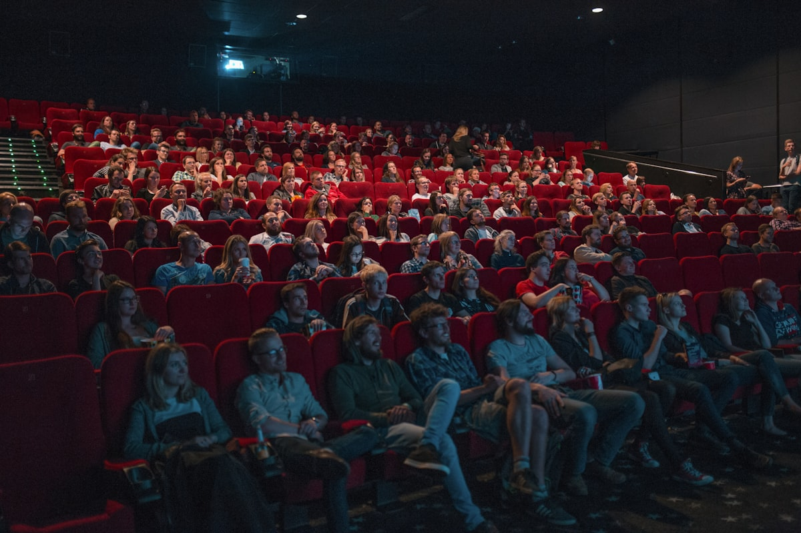
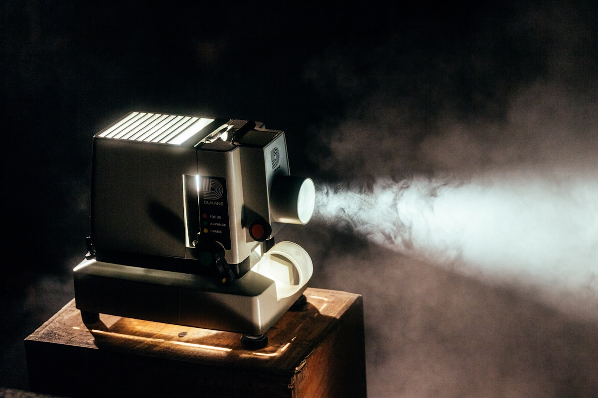

Whether you're setting up a home theater, outfitting a conference room, or looking for a portable solution for presentations on the go, choosing the right projector can be overwhelming. With multiple technologies available in the Indian market, understanding the differences between LCD, DLP, LED, Laser, and LCoS projectors matters.
In this guide, I'll break down each projector technology, their pros and cons, and help you decide which one is best suited for your specific needs.

1. LCD (Liquid Crystal Display) Projectors
LCD projectors use the same core technology found in many TVs and monitors. They rely on three separate LCD panels - one for each primary color (red, green, and blue). Light passes through these panels and combines to create the final image projected onto your screen.
Strengths
- Rich, vibrant colors with excellent saturation
- Sharp image clarity and text readability
- No "rainbow effect" (color fringing that some viewers notice)
- Generally more affordable than other technologies
- Energy efficient operation
Limitations
- Lower contrast ratios compared to DLP
- Potential for pixel grid visibility ("screen door effect")
- LCD panels can degrade over time
- Bulkier designs in some models
Epson dominates the LCD projector market in India, especially in educational and commercial sectors. Their proprietary 3LCD technology offers vibrant, bright images with low power consumption - making them a preferred choice for government and institutional buyers.
Best For: Classrooms, boardrooms, and presentations where color accuracy and text clarity are priorities.
Price Range in India: Rs. 25,000 - Rs. 2,00,000+
2. DLP (Digital Light Processing) Projectors
DLP projectors work using a Digital Micromirror Device (DMD) chip containing thousands (or millions) of microscopic mirrors. Each mirror represents a single pixel and rapidly tilts to reflect light either toward or away from the lens. A spinning color wheel adds red, green, and blue tones to create the final image.
Strengths
- Excellent contrast ratios for deeper blacks
- Smooth, film-like image quality
- No pixel grid visibility
- More compact and portable designs
- Less maintenance required
- Better motion handling for gaming and sports
Limitations
- Rainbow effect visible to some viewers
- Slightly less accurate colors than LCD
- Color wheel can produce audible noise
BenQ is a global leader in DLP projectors and is well-known in India for delivering accurate color calibration and cinema-grade picture quality. Their home cinema and gaming projectors are particularly popular among enthusiasts.
Best For: Home theaters, gaming setups, and anyone who prioritizes contrast and smooth motion.
Price Range in India: Rs. 30,000 - Rs. 3,00,000+
3. LED Projectors
LED projectors use LED lamps as their light source instead of traditional halogen bulbs. The LED technology works on electroluminescence to produce light. These projectors can use either LCD panels or DLP chips for image processing - the "LED" designation refers specifically to the light source.
Strengths
- Extremely long lamp life (20,000+ hours)
- No lamp replacement costs
- Compact and highly portable
- Instant on/off - no warm-up time needed
- Lower power consumption
- More durable for travel
Limitations
- Lower brightness compared to lamp-based projectors
- Can be more expensive than equivalent LCD projectors
- Not ideal for large venues or bright rooms
Best For: Portable presentations, small meeting rooms, personal entertainment, and travelers who need a compact solution.
Price Range in India: Rs. 15,000 - Rs. 1,50,000
Popular Brands: LG, ViewSonic, XGIMI, EGate, Zebronics

4. Laser Projectors
Laser projectors represent the cutting edge of projection technology. Pure laser (RGB laser) projectors generate light directly from three individual red, green, and blue lasers. This light then falls on a DMD chip or LCD panels to display the picture. Some models use a hybrid approach with laser-phosphor technology.
Strengths
- Exceptional brightness (up to 10,000+ lumens)
- Superior color gamut covering BT.2020 color space
- Outstanding contrast ratios and HDR performance
- Incredible lifespan of up to 30,000 hours (~20 years at 4 hours daily)
- Instant on/off with no warm-up period
- Virtually maintenance-free
- Consistent brightness throughout lifespan
Limitations
- Significantly higher upfront cost
- Overkill for casual home use
- Some models can be bulky
Samsung has entered the Indian projector market with premium laser models like The Premiere series, offering 4K laser projection with ultra-short throw capabilities and smart features powered by Tizen OS.
Best For: Premium home theaters, large venues, auditoriums, professional installations, and anyone who demands the absolute best image quality.
Price Range in India: Rs. 1,00,000 - Rs. 10,00,000+
5. LCoS (Liquid Crystal on Silicon) Projectors
LCoS technology combines elements of both LCD and DLP. Instead of light passing through liquid crystals (like LCD), LCoS reflects light off a silicon-backed panel. This results in highly detailed images with smooth color transitions and no visible pixel structure.
Strengths
- Superior image quality with exceptional detail
- Smooth color gradations without banding
- No rainbow effect or screen door effect
- High native contrast ratios
- Excellent for 4K and high-resolution content
Limitations
- Most expensive projector technology
- Limited availability in Indian market
- Can have motion blur issues
- Larger and heavier designs
Best For: High-end home theaters where ultimate image quality is the priority, and professional video production.
Price Range in India: Rs. 2,00,000 - Rs. 15,00,000+
Popular Brands: Sony (SXRD), JVC (D-ILA)
Quick Comparison Table
| Technology | Best For | Brightness | Price |
|---|---|---|---|
| LCD | Office/Education | High | Budget-Mid |
| DLP | Home Theater/Gaming | High | Mid-High |
| LED | Portable/Personal | Low-Medium | Budget-Mid |
| Laser | Premium/Large Venues | Very High | Premium |
| LCoS | Enthusiast Home Theater | High | Premium |
Top Projector Brands in India (2025-2026)
Here are the leading projector brands currently available in the Indian market:
- Epson: Market leader in LCD/3LCD projectors, dominant in education and enterprise
- BenQ: Premium DLP projectors with excellent color accuracy, popular for home cinema and gaming
- ViewSonic: Strong presence in education and enterprise with high-brightness DLP models
- Sony: Premium LCoS (SXRD) projectors for enthusiast home theaters
- Samsung: Premium laser projectors with smart TV features (The Premiere, The Freestyle)
- LG: Compact LED projectors with WebOS smart platform
- Optoma: Wide range of DLP projectors for all use cases
- XGIMI: Popular for affordable smart LED projectors
- EGate & Zebronics: Budget-friendly options for Indian consumers
My Recommendations
For Home Theater (Budget-Conscious):
Go with a DLP projector from BenQ or Optoma. You'll get excellent contrast ratios and smooth motion handling for movies - the perfect price-to-quality balance.
For Office/Classroom:
Choose a 3LCD projector from Epson with at least 2,500 lumens brightness. The accurate colors and sharp text make presentations look professional.
For Gaming:
Look for a DLP projector with low input lag (under 20ms) and 4K support. BenQ's gaming-focused projectors are excellent choices.
For Portability:
LED projectors from LG, XGIMI, or even budget options from EGate offer great portability with decent image quality for personal use.
For Premium Home Cinema:
If budget isn't a constraint, laser projectors from Samsung or LCoS projectors from Sony/JVC will deliver an unmatched cinematic experience.
Final Thoughts
The Indian projector market has matured significantly, with options available across all price points and use cases. Whether you're a student looking for an affordable LED projector for your room, a business professional needing a reliable presentation tool, or a cinema enthusiast building a dedicated home theater - there's a projector technology that fits your needs perfectly.
Remember to consider factors like room size, ambient light conditions, primary use case, and budget when making your decision. And don't forget to factor in long-term costs like lamp replacements (for LCD/DLP) versus the higher upfront cost but zero maintenance of LED and laser projectors.
Have questions about choosing the right projector? Feel free to reach out!
Image Credits
All images used in this article are sourced from Unsplash under the Unsplash License.